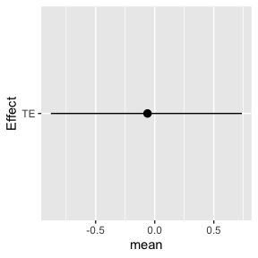
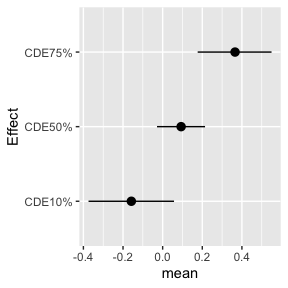
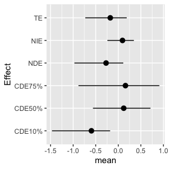
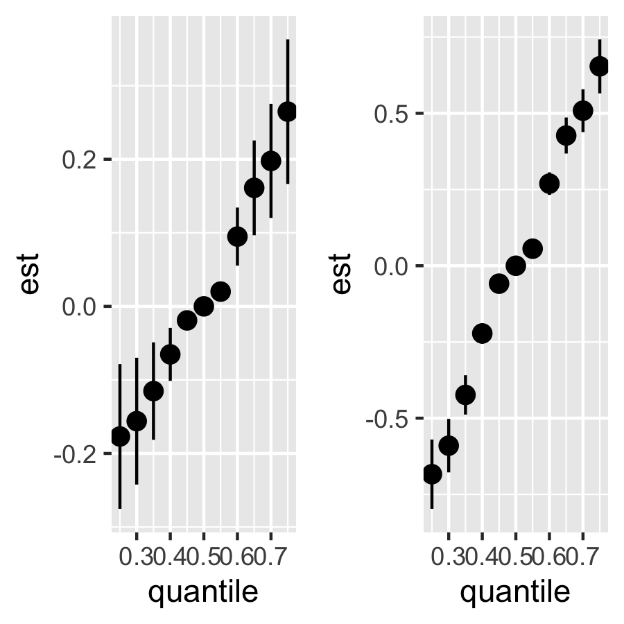
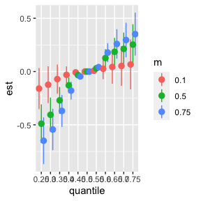

Example with N=300, L=3 for scenario 1:
dat <- cma_sampledata(N=300, L=3, P=3, scenario=1, seed=7)
head(dat$data, n = 3L)
#> z1 z2 z3 M x1 x2
#> 1 2.1398615 0.66567853 -0.80106452 -0.3325422 -1.00620320 0.4650244
#> 2 -1.1923396 -0.42173859 -0.07880356 -0.5939948 -0.07811248 0.1077124
#> 3 -0.7254667 -0.09880639 -0.45684941 0.9511806 -1.44686488 -0.4673260
#> x3 y
#> 1 -0.7528264 -0.2507079
#> 2 -0.2061189 -0.8547352
#> 3 -0.2041117 0.3982029
dat = dat$data
A <- cbind(dat$z1, dat$z2, dat$z3)
X <- cbind(dat$x3)
y <- dat$y
m <- dat$M
E.M <- NULL
E.Y <- dat$x2
Z.M <- cbind(A,E.M)
Z.Y <- cbind(A, E.Y)
Zm.Y <- cbind(Z.Y, m)
set.seed(1)
fit.y <- kmbayes(y=y, Z=Zm.Y, X=X, iter=20, verbose=TRUE, varsel=FALSE)
#save(fit.y,file="bkmr_y.RData")
set.seed(2)
fit.y.TE <- kmbayes(y=y, Z=Z.Y, X=X, iter=20, verbose=TRUE, varsel=FALSE)
#save(fit.y.TE,file="bkmr_y_TE.RData")
set.seed(3)
fit.m <- kmbayes(y=m, Z=Z.M, X=X, iter=20, verbose=TRUE, varsel=FALSE)
#save(fit.m,file="bkmr_m.RData")
sel<-seq(5,20,by=2)
## mean level of confounders
X.predict <- matrix(colMeans(X),nrow=1)
astar <- c(apply(A, 2, quantile, probs=0.25))
a <- c(apply(A, 2, quantile, probs=0.75))Estimate the TE for a change in the exposures from \(a^*\) to \(a\) fixing Effect modifier at testing to its 10th percentile or 90th percentile
e.y10 = quantile(E.Y, probs=0.1)
e.y90 = quantile(E.Y, probs=0.9)
TE.ey10 <- TE.bkmr(a=a, astar=astar, e.y = e.y10, fit.y.TE=fit.y.TE, X.predict=X.predict, alpha=0.05, sel=sel, seed=122)
TE.ey90 <- TE.bkmr(a=a, astar=astar, e.y = e.y90, fit.y.TE=fit.y.TE, X.predict=X.predict, alpha=0.05, sel=sel, seed=122)Look at the posterior mean, median, and 95% CI for TE:
TE.ey10$est
#> mean median lower upper sd
#> TE -0.06115878 -0.08845693 -0.8790883 0.7378907 0.6014134
TE.ey90$est
#> mean median lower upper sd
#> TE 0.7169756 0.7010558 -0.2331015 1.64435 0.6991428
plotdf <- as.data.frame(TE.ey10$est)
plotdf["Effect"] <- rownames(plotdf)
ggplot(plotdf, aes(Effect, mean, ymin = lower, ymax = upper)) +
geom_pointrange(position = position_dodge(width = 0.75)) + coord_flip()
Estimate the CDE for a change in the exposures from astar to a, fixing the mediator at its 10th, 50th, and 75th percentile and the effect modifier at testing at its 10th percentile
## estimate the CDE for a change in the exposures from astar to a,
## fixing the mediator at its 10th, 50th, and 75th percentile and
## Effect modifier at testing at its 10th percentile
CDE.ey10 <- CDE.bkmr(a=a, astar=astar, e.y = e.y10, m.quant=c(0.1,0.5,0.75), fit.y=fit.y, alpha=0.05, sel=sel, seed=777)
#> [1] "Running 3 mediator values for CDE:"
#> [1] "1 out of 3"
#> [1] "2 out of 3"
#> [1] "3 out of 3"
CDE.ey90 <- CDE.bkmr(a=a, astar=astar, e.y = e.y90, m.quant=c(0.1,0.5,0.75), fit.y=fit.y, alpha=0.05, sel=sel, seed=777)
#> [1] "Running 3 mediator values for CDE:"
#> [1] "1 out of 3"
#> [1] "2 out of 3"
#> [1] "3 out of 3"
## look at the posterior mean, median, and 95% CI for the CDEs
CDE.ey10$est
#> mean median lower upper sd
#> CDE10% -0.3375376 -0.1973078 -0.8798816 -0.02015687 0.3470328
#> CDE50% 0.4031937 0.5554230 -0.3585675 0.82502715 0.4683158
#> CDE75% 0.5187649 0.7199293 -0.4247664 1.04797462 0.5701230
CDE.ey90$est
#> mean median lower upper sd
#> CDE10% 1.1271380 1.3501121 0.01658348 1.814314 0.6667531
#> CDE50% 0.9931369 1.1364479 0.23782763 1.485220 0.4723705
#> CDE75% 0.7409251 0.8582263 0.18781689 1.162651 0.3785764
## Plotting
plotdf <- as.data.frame(CDE.ey10$est)
plotdf["Effect"] <- rownames(plotdf)
ggplot(plotdf, aes(Effect, mean, ymin = lower, ymax = upper )) +
geom_pointrange(position = position_dodge(width = 0.75)) + coord_flip()
Estimate the TE, NDE and NIE for a change in the exposures from astar to a fixing age at testing to its 90th percentile.
Note: this step takes a while to run and will take longer for more complex bkmr fits, longer sel vectors and larger.
mediationeffects.ey10 <- mediation.bkmr(a=a, astar=astar, e.y = e.y10, fit.m=fit.m, fit.y=fit.y, fit.y.TE=fit.y.TE, X.predict.M=X.predict, X.predict.Y=X.predict, alpha=0.05, sel=sel, seed=22, K=10)
#> [1] "Running 3 mediator values for CDE:"
#> [1] "1 out of 3"
#> [1] "2 out of 3"
#> [1] "3 out of 3"
mediationeffects.ey90 <- mediation.bkmr(a=a, astar=astar, e.y = e.y90, fit.m=fit.m, fit.y=fit.y, fit.y.TE=fit.y.TE, X.predict.M=X.predict, X.predict.Y=X.predict, alpha=0.05, sel=sel, seed=22, K=10)
#> [1] "Running 3 mediator values for CDE:"
#> [1] "1 out of 3"
#> [1] "2 out of 3"
#> [1] "3 out of 3"Look at the posterior mean, median, and 95% CI for the TE, NDE, and NIE
mediationeffects.ey10$est
#> mean median lower upper sd
#> TE -0.17713503 -0.08037567 -0.7314745 0.1871031 0.3385712
#> NDE -0.27034499 -0.11052819 -0.9724940 0.1108963 0.4162812
#> NIE 0.09320995 0.14762653 -0.2407213 0.3460598 0.2220446
#> CDE10% -0.59490351 -0.40796806 -1.4694056 -0.1807827 0.5104690
#> CDE50% 0.12057671 0.16867610 -0.5605356 0.7135190 0.4520495
#> CDE75% 0.15896016 0.29110948 -0.8824259 0.9097827 0.6490578
mediationeffects.ey90$est
#> mean median lower upper sd
#> TE 0.5471873 0.7100927 -0.2072893 0.9601151 0.4458540
#> NDE 0.4316716 0.6099588 -0.3129147 0.9690197 0.5009954
#> NIE 0.1155157 0.1082430 -0.3949411 0.6467231 0.3410370
#> CDE10% 0.7436968 0.8512192 -0.2628835 1.6321574 0.6723563
#> CDE50% 0.6853157 0.7999978 -0.1154415 1.2639570 0.5017720
#> CDE75% 0.4423334 0.6353104 -0.4732432 0.9095754 0.5259316Plotting
plotdf <- as.data.frame(mediationeffects.ey10$est)
plotdf["Effect"] <- rownames(plotdf)
ggplot(plotdf, aes(Effect, mean, ymin = lower, ymax = upper )) +
geom_pointrange(position = position_dodge(width = 0.75)) + coord_flip()
riskSummary10 = TERiskSummaries.CMA(fit.TE = fit.y.TE, e.y=e.y10, e.y.name = "E.Y", sel=sel)
ggplot(riskSummary10,
aes(quantile,
est,
ymin = est - 1.96 * sd,
ymax = est + 1.96 * sd)) +
geom_pointrange()
riskSummary90 = TERiskSummaries.CMA(fit.TE = fit.y.TE, e.y=e.y90, e.y.name = "E.Y", sel=sel)
ggplot(riskSummary90,
aes(quantile,
est,
ymin = est - 1.96 * sd,
ymax = est + 1.96 * sd)) +
geom_pointrange()
# CDE
CDEriskSummary10 = CDERiskSummaries.CMA(fit.y = fit.y, e.y = e.y10, e.y.name = "E.Y", m.name = "m", sel = sel)
ggplot(CDEriskSummary10, aes(quantile, est, ymin = est - 1.96*sd,
ymax = est + 1.96*sd, col = m)) +
geom_pointrange(position = position_dodge(width = 0.75))
CDEriskSummary90 = CDERiskSummaries.CMA(fit.y = fit.y, e.y = e.y90, e.y.name = "E.Y", m.name = "m", sel = sel)
ggplot(CDEriskSummary90, aes(quantile, est, ymin = est - 1.96*sd,
ymax = est + 1.96*sd, col = m)) +
geom_pointrange(position = position_dodge(width = 0.75))
# single variable total effects
# risks.singvar10 = SingVarRiskSummaries.CMA(BKMRfits = fit.y.TE,
# e.y=e.y10, e.y.names="E.Y",
# sel=sel)
# ggplot(risks.singvar10, aes(variable, est, ymin = est - 1.96*sd,
# ymax = est + 1.96*sd, col = q.fixed)) +
# geom_pointrange(position = position_dodge(width = 0.75)) +
# coord_flip()
#
#
# risks.singvar90 = SingVarRiskSummaries.CMA(BKMRfits = fit.y.TE,
# e.y=e.y90, e.y.names="E.Y",
# sel=sel)
# ggplot(risks.singvar90, aes(variable, est, ymin = est - 1.96*sd,
# ymax = est + 1.96*sd, col = q.fixed)) +
# geom_pointrange(position = position_dodge(width = 0.75)) +
# coord_flip()
# single variable controlled direct effects
# CDErisks.singvar10 = CDESingVarRiskSummaries.CMA(BKMRfits = fit.y,
# e.y=e.y10, e.y.names="E.Y", m.name = "m",
# sel=sel)
# ggplot(CDErisks.singvar10, aes(variable, est, ymin = est - 1.96*sd,
# ymax = est + 1.96*sd, col = q.fixed, linetype = m.fixed)) +
# geom_pointrange(position = position_dodge(width = 0.75)) +
# coord_flip()
#
# CDErisks.singvar90 = CDESingVarRiskSummaries.CMA(BKMRfits = fit.y,
# e.y=e.y90, e.y.names="E.Y", m.name = "m",
# sel=sel)
# ggplot(CDErisks.singvar90, aes(variable, est, ymin = est - 1.96*sd,
# ymax = est + 1.96*sd, col = q.fixed, linetype = m.fixed)) +
# geom_pointrange(position = position_dodge(width = 0.75)) +
# coord_flip()